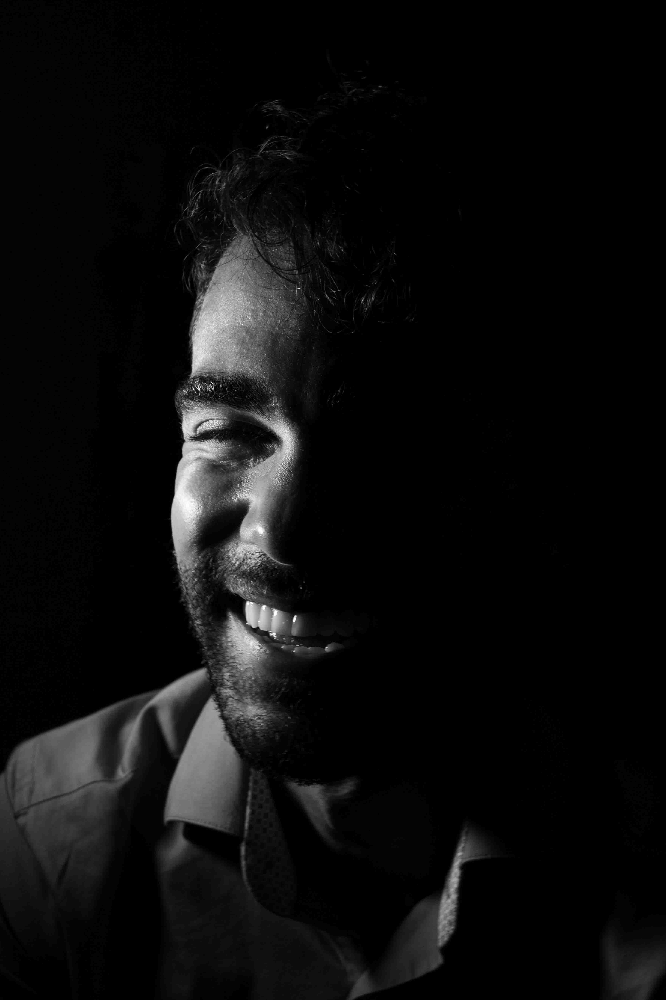
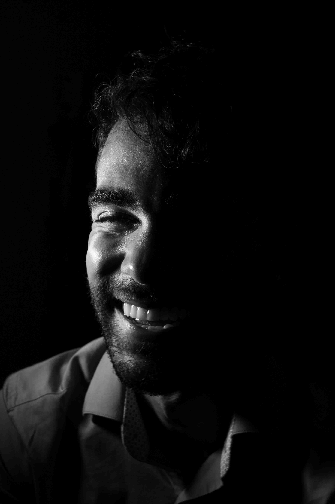
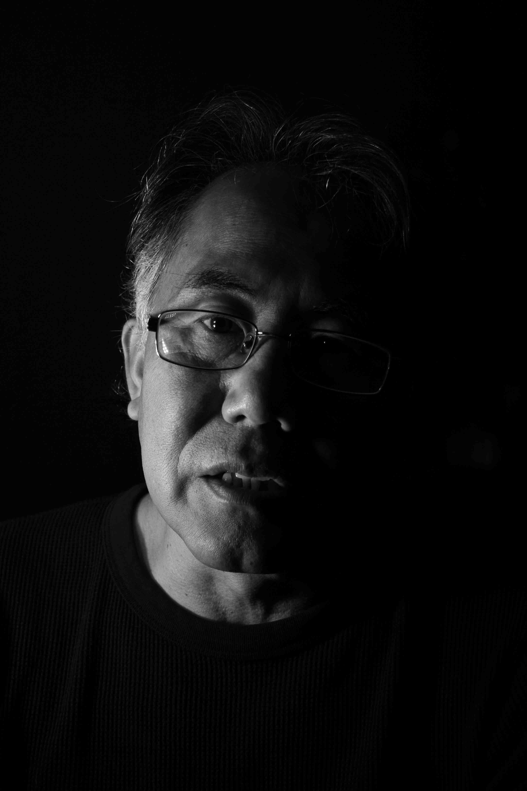
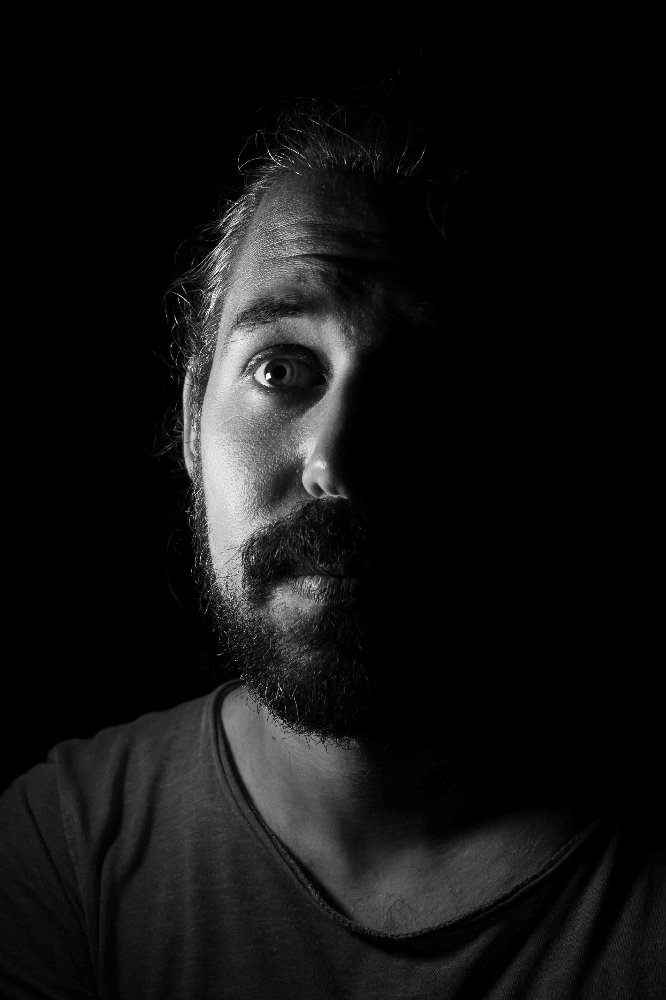
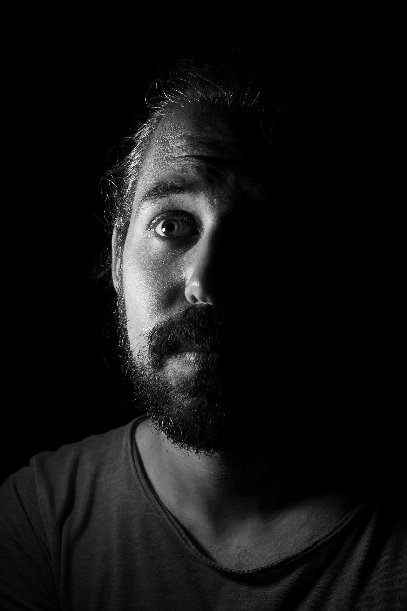

“Overwhelmed, disappointed, guilty”
Neal works in the gap between the production of research, and how that science is reliably summarised and used in decision-making in sectors related to the environment, sustainability, and climate.
Everything I read now is another record broken, another disaster, seeing something we never thought we would see in the near future. I find this too much to deal with sometimes, it's overwhelming. It's especially hard to care about the small things in life when you know there is and will be so much suffering on the planet: "what have we done...?"
This is not where he thought we would be now - we should have done more. He explains that it was clear to him that things were bad when he was younger, and that pushed him to work in conservation so he could make a difference. People know more now, he says, but it feels like little has changed. “When you’re up against capitalism and public and political inertia it’s hard to feel like your small piece of the puzzle is having any impact at all”.
He says he is scared about how we and future generations will cope with all the problems that have been knowingly swept under the carpet for decades. “It’s hard to see how things won’t get a lot worse for some people, and I feel guilty that I haven’t been able to do more. I feel impotent.”
“Do I feel hope? I don't know. Hope seems very passive. We're beyond hope, thoughts and prayers. We need to drastically change how we live. Can you hope for that?” It's possible, but we have to do so much more than hope, he says.

 

“Chaotic, apathetic, faithful”
Patricio is a communications and visual changemaker. He makes visible the invisible by translating water and climate programmes and research into digital content that nudges people to make better choices.
He tells me that he has wanted to work in environmental advocacy for a long time, but that the state of the planet today can sometimes be too much to bear. Despite his awareness of the chaotic situation in which we find ourselves, he remains grounded. “Yes, things are bad”, he tells me, “but a survival mechanism kicks in that stops this knowledge from generating fear and panic: a welcome apathy, perhaps”.
He trusts that whatever the future holds will be good: “Welcoming the chaos - the loss of individual and collective energy to keep changing things - is part of becoming aware: the awakening of consciousness”. He tells me that perhaps by witnessing devastating realities we will become better versions of ourselves and lead the way to transformation.


“Ashamed, outraged, determined”
Fiona is a social scientist working to understand what factors affect people’s choices, particularly with respect to access to energy and energy poverty.
She explains to me that the state of the planet and the climate crisis is increasingly featuring in her discussions with her research participants in Africa; something that often feels like a bigger issue than the objective of her work on cookstoves and energy, leaving her sometimes feeling useless. At the same time, she feels ashamed that the research and practice community hasn’t come further and done more: “I cringe sometimes when I write about the current state of knowledge in research papers – we know this and yet we see no action. It’s repetitive and depressing”.
Her children help her to be determined, though – she can’t give up on them. They have embraced buying second hand and understand why, she explains - clearly humbled but proud. The children even been a driving force to reduce the family’s impacts on the environment.
When I ask her about the future, she explains she doesn’t feel hope: “the word hope is not good enough – it’s far away and doesn’t imply action. Hope won’t drive me forwards. But being outraged, having a sense of purpose, I need something that drives me not to give up, but I don’t want to call it hope.” She tells me that for her, outrage is something she clings to – the explosive, disruptive shock: “it feels like it might lead to some shift, some watershed”.



“Frustrated, disastrous, faithful”
Guoyi is a researcher focusing on water, climate change and disaster risk reduction, particularly focusing on the role of China.
Despite his calm presence, he describes at length how frustrated he is with the state of the planet and humanity’s poor response: “you keep hearing the same message again and again, but mistakes keep being made”. He tells me of his frustrations with the way that China is described – confrontational and accusatory – “any solution has to involve China!”. But he manages to stay calm by an inherent belief that perhaps there is some logic to the way things are. This calmness, he tells me, can perhaps be traced back to his Taoist roots, and he explains an old Chinese adage about the sky falling that reflects the benefits of not worrying about things outside your control.
Some experts believe that the most likely outcome for humanity will be very narrowly escaping total disaster, he tells me: “and we are already entering a time where we are seeing all kinds of disasters”. Again, he tells me that he takes comfort from the fact that we may need such disaster to get to a tipping point where things are forced to change.
He tells me that we just need to have faith that we will pull through. He takes motivation from finding his own meaning in what he does, working towards open dialogue and trying to understand one another: “sometimes, we’re too wrapped up in whether we are making a difference. But as long as I see meaning in what I do, that’s good enough motivation for me to get up every day and do it.”
He tells me he feels hope – that it is implicitly encompassed in faith: “this enduring power of human survival – that’s where my hope lies.”

 

“Hopeless, powerless, resilient”
José Luis is an environmental scientist investigating the role of community-led initiatives in improving the sustainability of food systems.
He likens his feelings about the state of the planet to watching an asteroid hurtling towards us: sometimes he feels nobody else can see it; every day it is a little closer; and we seem to be doing nothing about it. His desperation and frustration are clear. “When people find out what I do for work they often say ‘ah, great that you are working to save the planet!’ But I don’t know how to respond, because it doesn’t feel like we are…”.
Despite this, he also feels that researchers need to stay strong in the face of fear and frustration. “Any victory is a huge victory. We work for the public good – we are duty-bound to carry on.”
“I don't have any hope”, he tells me, apologetically. “I think that the human selfishness of the rich countries is more powerful than the need for a transformative change”


“Anguished, awestruck, passionate”
Anneli has a background in environmental science and sustainability and is a science communicator.
It is immediately obvious that the state of the planet is affecting her. She is deeply empathetic and explains that this year has been a personal tipping point for her, ignited by the heatwaves in Western North America. She is very aware of what humanity is beginning to endure from climate change, and she feels this pain keenly. She tells me that the anguish she feels comes in waves and feels visceral, like a loss, like grief: “it’s really happening!” she whispers.
But she also feels in awe of mother nature – we have changed things so much that the entire planet is responding: “it’s like a sick body reacting, and it’s fascinating to see what it can do - what it can do to people”, she says.
She explains that hope is not enough, but maybe passion is: “we have to have passion to turn things around. We need to make people passionate about the planet”. She feels it is not hope that we need right now - that she cannot feel hope. “We need a force to carry on, more than hope. It needs to stem from love, from inside ourselves. I wish I could say that I feel hope, but I don’t. We need action!”.